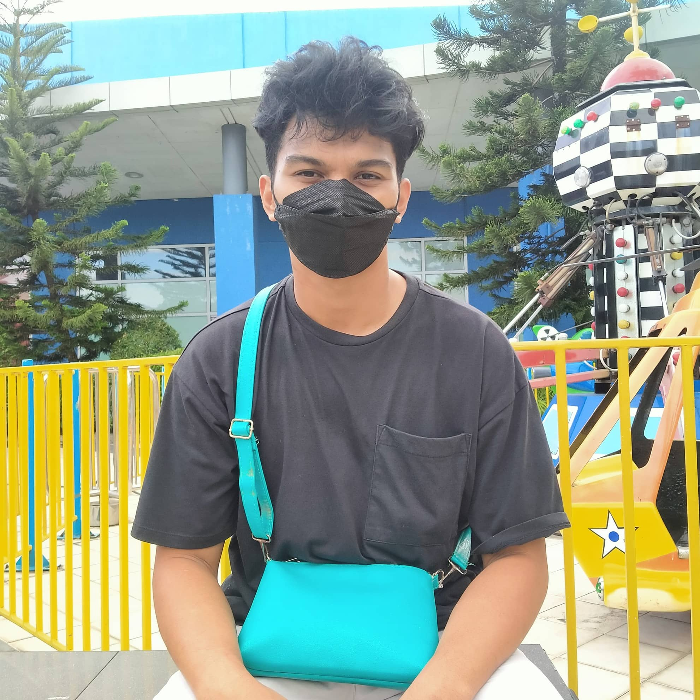
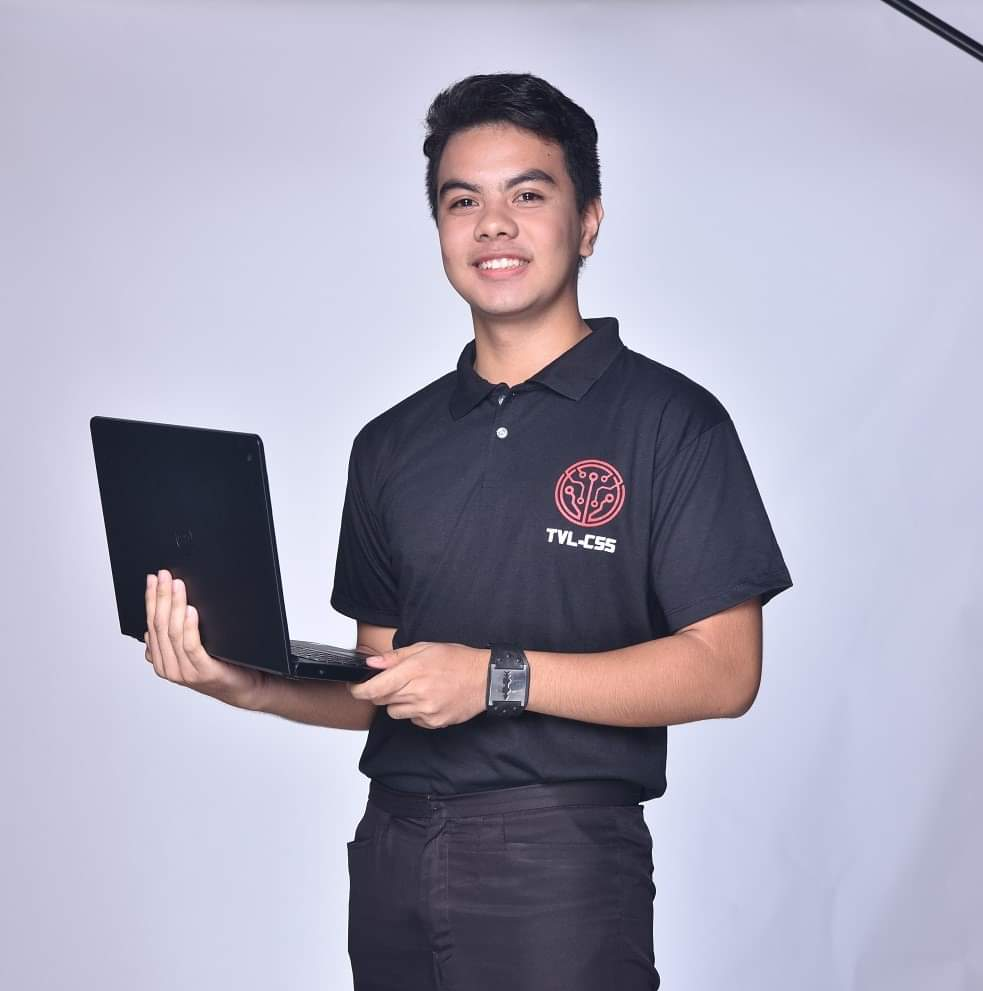
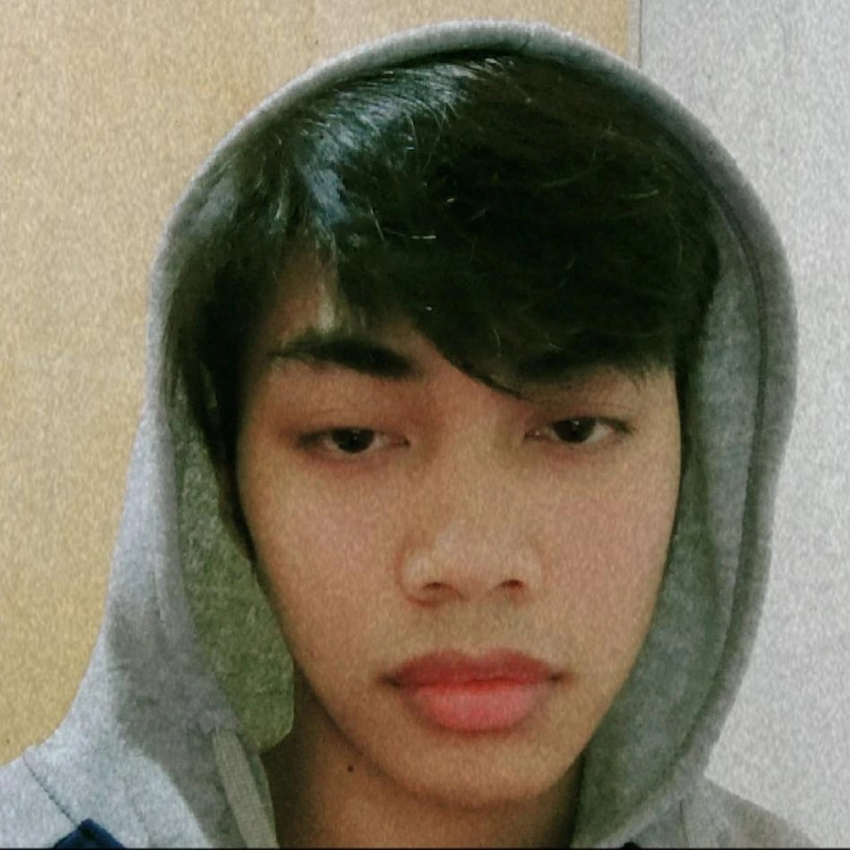

Meet our Team

Team Leader
Ethical, Influential, and has the ability to delegate outstanding communication towards his team members and colleagues in order to create modern solutions for our modern society.
Designer
A Virtuoso in digital arts. His creations are being praised through out the internet. His impeccable skill towards attention to detail is immeasurable. He also happens to like eating and sleeping.

Web Designer
The rose among thorns. Her beauty might be surreal, but it only hides her true alluring attribute which is her intellect and ability to code astonishingly. Truly a beauty with a beast like brainpower.
Web Designer
meh...
Web Designer
The Reliable one. The guy who can do just about everything, and always strives for perfection. He might be the quiet one but he has the ability to learn and adapt quickly.
Contact Us
- Email: semicolongang@gmail.com
- Negros Occidental, Philippines